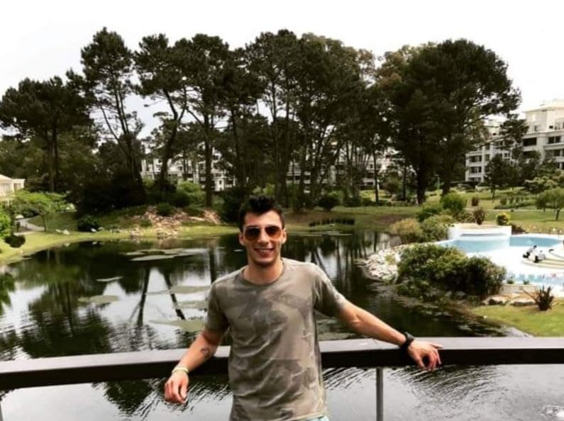

CURRICULUM VITAE DE BRUNO MATIAS ARIAS BONACCHI

DATOS PERSONALES
- Nombre completo:Bruce Matias Arias Bonacchi
- Fecha de nacimiento:10/07/1996
- Lugar de nacimiento:Gral. Roca, Rio Negro.
FORMACION ACADEMICA
- 2000-2014:
- I.M.A (Primaria y Secundaria)
- 2016-Actualidad:
- Formacion Virtual/Digital:
- (2016-2017) Inversiones Forex
- (2018) E-Commerce
- (2019) Seminarios Online
- (2020) Marketing Digital Para Negocios Locales
- (2020-Actualidad) Inversiones cripto
- (2021-Actualidad)Certified Tech Developer
EXPERIENCIA LABORAL
- 2015-Actualidad:
- Empleado (ferreteria)
- 2015-Actualidad:
- Emprendedor Digital (Autodidacta):
- Inversiones
- Marketing Digital
- Network Marketing
- Programas de afiliacion Digital (Marketing de afiliados)